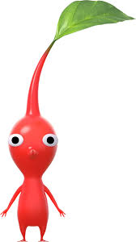
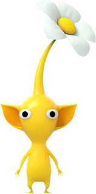
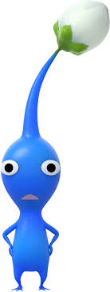
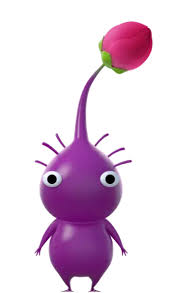
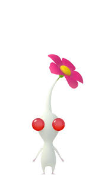
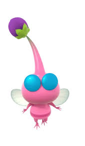
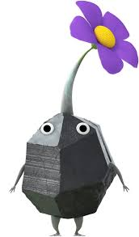

종류
-
빨강피크민

색이 붉은색이고, 얼굴에 뾰족한 코와 같은 돌기가 달려 있다.
설정상 피부의 근섬유가 불타기 어려운 세포로 되어 있기에 불이나 열에 면역을 가진다고 한다, 이를 이용해 불씨를 들고 있을 수도 있다.
뾰족한 코가 달려 있어서 공격력이 다른 피크민의 1.5배이다. -
노랑피크민

색이 노란색이고, 얼굴에 커다란 귀와 같은 주름이 달려 있다.
전기에 면역인 점을 이용해 끊어진 전선을 연결할 수 있으며, 전기가 통하는 것으로 머리의 잎이 꽃으로 성장하는 경우도 있다고 한다.
커다란 귀 덕분에 던졌을 때 제일 멀리, 제일 높이 날아갈 수 있다. -
파랑피크민

색이 파란색이고, 얼굴에 입을 닮은 아가미가 달려 있다.
입처럼 생긴 아가미를 이용하여 물 속에서 숨을 쉴 수 있고, 물에 면역이다.
쇼트무비에서 나온 묘사를 보면 실제 입처럼 아가미로 웃는 표정을 짓는 것도 가능하다. -
보라피크민

색이 보라색이고, 피크민들 중 가장 덩치가 크며 무겁다.
이동속도가 제일 느리지만, 힘이 매우 세다, 1마리당 다른 피크민 10마리분의 운반 능력을 발휘한다. -
하양피크민

색이 흰색이고, 다른 피크민들에 비해서 몸집이 작은 편이다.
독극물이 있기 때문에 독 공격에 면역을 가지며, 먹히면 먹은 원주생물에게 큰 피해를 입힌다.
피크민들 중 가장 빠르게 달릴 수 있다, 다만 다른 피크민에 비해 공격력은 약하다.
독은 강산성 용액처럼 철도 간단히 녹여버릴 정도로 강력하며, 성격도 상당히 신경질적이다. -
날개피크민

색이 분홍색이며, 이름 그대로 날개가 달려 있다.
몸에는 벌레처럼 줄무늬가 있다.
피크민들 중에서 가장 몸집이 작으며, 목소리도 다른 피크민들에 비해 높다. -
바위피크민

색이 회색이며, 이름 그대로 몸이 각진 돌 형태로 이루어져 있다.
단단한 몸 덕분에 찌르는 공격이나 깔아뭉개는 공격에 면역이 있으며, 수정이나 유리판과 같은 단단한 물체를 부숴버릴 수 있다.
바위에 기생한 피크민이라는 설정이 있다.